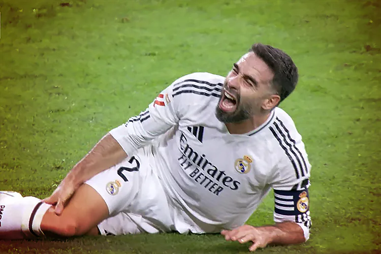

Daniel Carvajal cayó lesionado tras sufrir molestias durante su partido de la liga frente al Villareal, el jugador tuvo que retirarse del partido sin poder terminarlo. Al parecer el jugador se ha roto el ligamento colateral externo y también tiene una rotura del tendón poplíteo en su pierna derecha con lo cual tendrá que pasar por el quirófano.
